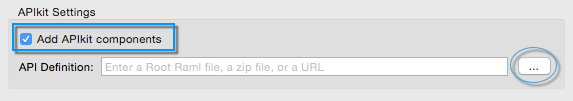

Example: Testing APIkit
Overview
This document contains a basic example on testing APIkit-based applications. There are two basic ways to test an application based on APIkit: Going through the APIkit router, or not going through the APIkit router.
The difference resides in what you are trying to test. Clearly, if you go through the APIkit router you have a more complete test than if you do not; however, not going through the router shields your test from API-related information, allowing you to test only the business logic of the API.
In this example, we go through the APIkit router.
Aside of what is contained in the XML configuration, the APIkit router handles some tasks under the hood:
-
Routing by resource/method/content-type
-
Validation of input payloads, headers, query-params, uri-params
-
Auto-transformation (serialization) of the response payload
To perform these tasks, the APIkit Router constantly reads the api.raml file. Thus, going through the APIkit Router helps you maintain consistency between the XML configuration that implements the API and the RAML definition file.
Example Test
Create a new Mule Studio project and create a RAML definition file in the api folder (for details on how to do this, see the APIkit Tutorial).
The RAML Definition
#%RAML 0.8
---
title: Sample API
/munit:
displayName: Login
get:
description: Login through signed request
responses:
200:
body:
application/json:
post:
description: Login through signed request
responses:
201:
body:
application/json:
put:
description: Login through signed request
responses:
201:
body:
application/json:
delete:
description: Login through signed request
responses:
200:
body:
application/json:
The API Implementation
Below is the result after you generate the flows for the RAML definition:
Studio Visual Editor
Note that APIKit also creates a Global Exception Strategy to catch all possible http status code errors:
XML or Standalone Editor
<apikit:config name="api-config" raml="api.raml" consoleEnabled="true" consolePath="console" doc:name="Router" />
<http:listener-config name="HTTP_Listener_Configuration" host="localhost" port="9090" connectionIdleTimeout="999999" doc:name="HTTP Listener Configuration" basePath="/api"/>
<apikit:mapping-exception-strategy name="api-apiKitGlobalExceptionMapping" >
<apikit:mapping statusCode="404">
<apikit:exception value="org.mule.module.apikit.exception.NotFoundException" />
<set-property propertyName="Content-Type" value="application/json" doc:name="Property" />
<set-payload value="{ "message": "Resource not found"]" doc:name="Set Payload" />
</apikit:mapping>
<apikit:mapping statusCode="405">
<apikit:exception value="org.mule.module.apikit.exception.MethodNotAllowedException" />
<set-property propertyName="Content-Type" value="application/json" doc:name="Property" />
<set-payload value="{ "message": "Method not allowed"]" doc:name="Set Payload" />
</apikit:mapping>
<apikit:mapping statusCode="415">
<apikit:exception value="org.mule.module.apikit.exception.UnsupportedMediaTypeException" />
<set-property propertyName="Content-Type" value="application/json" doc:name="Property" />
<set-payload value="{ "message": "Unsupported media type"]" doc:name="Set Payload" />
</apikit:mapping>
<apikit:mapping statusCode="406">
<apikit:exception value="org.mule.module.apikit.exception.NotAcceptableException" />
<set-property propertyName="Content-Type" value="application/json" doc:name="Property" />
<set-payload value="{ "message": "Not acceptable"]" doc:name="Set Payload" />
</apikit:mapping>
<apikit:mapping statusCode="400">
<apikit:exception value="org.mule.module.apikit.exception.BadRequestException" />
<set-property propertyName="Content-Type" value="application/json" doc:name="Property" />
<set-payload value="{ "message": "Bad request"]" doc:name="Set Payload" />
</apikit:mapping>
</apikit:mapping-exception-strategy>
<flow name="api-main" >
<http:listener config-ref="HTTP_Listener_Configuration" path="*" doc:name="HTTP"/>
<apikit:router config-ref="api-config" doc:name="APIkit Router" />
<exception-strategy ref="api-apiKitGlobalExceptionMapping" doc:name="Reference Exception Strategy" />
</flow>
<flow name="get:/munit:api-config" >
<set-payload value="#['GET RESPONSE']" doc:name="Set Payload" />
</flow>
<flow name="put:/munit:api-config" >
<set-payload value="#['PUT RESPONSE']" doc:name="Set Payload"/>
</flow>
<flow name="delete:/munit:api-config" >
<set-payload value="#['DELETE RESPONSE']" doc:name="Set Payload"/>
</flow>
<flow name="post:/munit:api-config" >
<set-payload value="#['POST RESPONSE']" doc:name="Set Payload"/>
</flow>|
When creating this example, make sure you add APIkit components to your project:

|
| In the above example, the default listener port of the HTTP global configuration has been changed to 9090. |
The MUnit Test
These sections contain a breakdown of the important parts of the test. You can find a complete version of the XML at the bottom of the page.
The MUnit configuration:
Studio Visual Editor
XML or Standalone Editor
<munit:config doc:name="Munit configuration" mock-connectors="false" mock-inbounds="false"/>
<spring:beans>
<spring:import resource="classpath:api.xml"/>
</spring:beans>
In the MUnit configuration, it is essential that you set mock-connectors and mock-inbounds to false. By default, MUnit sets these values to true (since usually you don’t want to enable inbound endpoints), so you must manually set these values to false; otherwise the test does not work.
|
An actual test:
Studio Visual Editor
XML or Standalone Editor
<munit:test name="api-test-get" description="Test">
<munit:set payload="#['']" doc:name="Set Message"/>
<http:request config-ref="HTTP_Request_Configuration" path="/munit" method="GET" doc:name="HTTP"/>
<object-to-string-transformer doc:name="Object to String"/>
<munit:assert-true message="The HTTP Status code is not correct!" condition="#[messageInboundProperty('http.status').is(eq(200))]" doc:name="Assert True"/>
<munit:assert-on-equals message="The response payload is not correct!" expectedValue=""GET RESPONSE"" actualValue="#[payload]" doc:name="Assert Equals"/>
</munit:test>As you can see, we are using an http connector to trigger the test. This enables you to use the HTTP outbound endpoint to define everything you need in order to hit a resource of your API (HTTP verbs, headers, paths, MIME types, etc.). In this example, we cover only the verb.
The two assertions in the test:
Studio Visual Editor
XML or Standalone Editor
<munit:assert-true message="The HTTP Status code is not correct!" condition="#[messageInboundProperty('http.status').is(eq('200'))]" doc:name="Assert True"/>
<munit:assert-on-equals message="The response payload is not correct!" expectedValue="#['\"GET RESPONSE\"']" actualValue="#[payload]" doc:name="Assert Equals"/>This example illustrates one of the most basic assertions needed in a test like this:
-
To validate the HTTP status code
-
To validate the returned payload
Full test config XML:
Studio Visual Editor
XML or Standalone Editor
<munit:config name="munit" doc:name="MUnit configuration" mock-connectors="false" mock-inbounds="false"/>
<spring:beans>
<spring:import resource="classpath:apigwexample-docs.xml"/>
</spring:beans>
<http:request-config name="HTTP_Request_Configuration" host="localhost" port="9090" basePath="/api" connectionIdleTimeout="999999" doc:name="HTTP Request Configuration">
<http:raml-api-configuration location="api.raml"/>
</http:request-config>
<munit:test name="api-test-get" description="Test">
<munit:set payload="#['']" doc:name="Set Message"/>
<http:request config-ref="HTTP_Request_Configuration" path="/munit" method="GET" doc:name="HTTP"/>
<object-to-string-transformer doc:name="Object to String"/>
<munit:assert-true message="The HTTP Status code is not correct!" condition="#[messageInboundProperty('http.status').is(eq(200))]" doc:name="Assert True"/>
<munit:assert-on-equals message="The response payload is not correct!" expectedValue=""GET RESPONSE"" actualValue="#[payload]" doc:name="Assert Equals"/>
</munit:test>
<munit:test name="api-test-post" description="Test">
<munit:set payload="#['']" doc:name="Set Message"/>
<http:request config-ref="HTTP_Request_Configuration" path="/munit" method="POST" doc:name="HTTP"/>
<object-to-string-transformer doc:name="Object to String"/>
<munit:assert-true message="The HTTP Status code is not correct!" condition="#[messageInboundProperty('http.status').is(eq(201))]" doc:name="Assert True"/>
<munit:assert-on-equals message="The response payload is not correct!" expectedValue=""POST RESPONSE"" actualValue="#[payload]" doc:name="Assert Equals"/>
</munit:test>
<munit:test name="api-test-put" description="Test">
<munit:set payload="#['']" doc:name="Set Message"/>
<http:request config-ref="HTTP_Request_Configuration" path="/munit" method="PUT" doc:name="HTTP"/>
<object-to-string-transformer doc:name="Object to String"/>
<munit:assert-true message="The HTTP Status code is not correct!" condition="#[messageInboundProperty('http.status').is(eq(201))]" doc:name="Assert True"/>
<munit:assert-on-equals message="The response payload is not correct!" expectedValue=""PUT RESPONSE"" actualValue="#[payload]" doc:name="Assert Equals"/>
</munit:test>
<munit:test name="api-test-delete" description="Test">
<munit:set payload="#['']" doc:name="Set Message"/>
<http:request config-ref="HTTP_Request_Configuration" path="/munit" method="DELETE" doc:name="HTTP"/>
<object-to-string-transformer doc:name="Object to String"/>
<munit:assert-true message="The HTTP Status code is not correct!" condition="#[messageInboundProperty('http.status').is(eq(200))]" doc:name="Assert True"/>
<munit:assert-on-equals message="The response payload is not correct!" expectedValue=""DELETE RESPONSE"" actualValue="#[payload]" doc:name="Assert Equals"/>
</munit:test>Conclusion
This example shows how to trigger hits to the endpoint exposed by APIkit, and why it is important to test the endpoint in this manner. As always, you can make your test as sophisticated as you deem necessary by using the tools that MUnit offers: Mock, Spy, Verification, Assertion, etc.
Create a Test Suite Automatically
Although this example is meant to showcase how to build a test suite from the ground, MUnit allows you to automatically create a test Suite based on your RAML definitions.
This is illustrated in the implementing and testing an API quickstart section.
Based on complete t-shirt API definition, the MUnit’s scaffolder automatically creates the following test Suite:
Studio Visual Editor
XML or Standalone Editor
<?xml version="1.0" encoding="UTF-8"?>
<mule xmlns="http://www.mulesoft.org/schema/mule/core" xmlns:doc="http://www.mulesoft.org/schema/mule/documentation" xmlns:http="http://www.mulesoft.org/schema/mule/http" xmlns:mock="http://www.mulesoft.org/schema/mule/mock" xmlns:munit="http://www.mulesoft.org/schema/mule/munit" xmlns:spring="http://www.springframework.org/schema/beans" xmlns:xsi="http://www.w3.org/2001/XMLSchema-instance" xsi:schemaLocation="http://www.mulesoft.org/schema/mule/core http://www.mulesoft.org/schema/mule/core/current/mule.xsd http://www.springframework.org/schema/beans http://www.springframework.org/schema/beans/spring-beans-3.1.xsd http://www.mulesoft.org/schema/mule/http http://www.mulesoft.org/schema/mule/http/current/mule-http.xsd http://www.mulesoft.org/schema/mule/munit http://www.mulesoft.org/schema/mule/munit/current/mule-munit.xsd http://www.mulesoft.org/schema/mule/mock http://www.mulesoft.org/schema/mule/mock/current/mule-mock.xsd ">
<spring:beans>
<spring:import resource="classpath:t-shirt.xml" />
</spring:beans>
<munit:config mock-connectors="false" mock-inbounds="false" />
<http:request-config name="HTTP_Request_Configuration" host="localhost" port="8081" basePath="/api" />
<munit:test name="get:/products:t-shirt-config-200-application/json-FlowTest" description="Verifying functionality of [get:/products:t-shirt-config-200-application/json]">
<http:request config-ref="HTTP_Request_Configuration" method="GET" path="/products">
<http:request-builder>
<http:header headerName="Accept" value="application/json" />
</http:request-builder>
</http:request>
<object-to-string-transformer doc:name="http response to string" />
<munit:assert-true message="The HTTP Status code is not correct!" condition="#[messageInboundProperty('http.status').is(eq(200))]" doc:name="assert that - http.status eq 200" />
<munit:assert-on-equals message="The response payload is not correct!" expectedValue="#[getResource('scaffolder/response/get_200_products_application_json.json').asString()]" actualValue="#[payload]" doc:name="assert that - payload is as expected" />
</munit:test>
<munit:test name="get:/orders/status:t-shirt-config-200-application/json-FlowTest" description="Verifying functionality of [get:/orders/status:t-shirt-config-200-application/json]">
<set-variable variableName="orderId" value="#['4321']" doc:name="orderId" />
<set-variable variableName="email" value="#['max@mule.com']" doc:name="email" />
<http:request config-ref="HTTP_Request_Configuration" method="GET" path="/orders/status">
<http:request-builder>
<http:header headerName="Accept" value="application/json" />
<http:query-param paramName="orderId" value="#[flowVars['orderId']]" />
<http:query-param paramName="email" value="#[flowVars['email']]" />
</http:request-builder>
</http:request>
<object-to-string-transformer doc:name="http response to string" />
<munit:assert-true message="The HTTP Status code is not correct!" condition="#[messageInboundProperty('http.status').is(eq(200))]" doc:name="assert that - http.status eq 200" />
<munit:assert-on-equals message="The response payload is not correct!" expectedValue="#[getResource('scaffolder/response/get_200_orders_status_application_json.json').asString()]" actualValue="#[payload]" doc:name="assert that - payload is as expected" />
</munit:test>
<munit:test name="post:/orders:application/json:t-shirt-config-200-application/json-FlowTest" description="Verifying functionality of [post:/orders:application/json:t-shirt-config-200-application/json]">
<set-payload value="#[getResource('scaffolder/request/post_orders_application_json.json').asString()]" />
<http:request config-ref="HTTP_Request_Configuration" method="POST" path="/orders">
<http:request-builder>
<http:header headerName="Accept" value="application/json" />
<http:header headerName="Content-Type" value="application/json" />
</http:request-builder>
</http:request>
<object-to-string-transformer doc:name="http response to string" />
<munit:assert-true message="The HTTP Status code is not correct!" condition="#[messageInboundProperty('http.status').is(eq(200))]" doc:name="assert that - http.status eq 200" />
<munit:assert-on-equals message="The response payload is not correct!" expectedValue="#[getResource('scaffolder/response/post_200_orders_application_json.json').asString()]" actualValue="#[payload]" doc:name="assert that - payload is as expected" />
</munit:test>
</mule>The new RAML scaffolder bundled in MUnit 1.2 generates external files located in src/test/resources/scaffolder based on the requests and responses examples in the API definition.
Using a getResource MEL expression it then references those request and responses from the MUnit test:
Studio Visual Editor
XML or Standalone Editor
<munit:test name="post:/orders:application/json:api-config-200-application/json-FlowTest" description="Verifying functionality of [post:/orders:application/json:api-config-200-application/json]">
<set-payload value="#[getResource('scaffolder/request/post_orders_application_json.json').asString()]" />
<http:request config-ref="HTTP_Request_Configuration" method="POST" path="/orders">
<http:request-builder>
<http:header headerName="Accept" value="application/json" />
<http:header headerName="Content-Type" value="application/json" />
</http:request-builder>
</http:request>
<object-to-string-transformer doc:name="http response to string" />
<munit:assert-true message="The HTTP Status code is not correct!" condition="#[messageInboundProperty('http.status').is(eq(200))]" doc:name="assert that - http.status eq 200" />
<munit:assert-on-equals message="The response payload is not correct!" expectedValue="#[getResource('scaffolder/response/post_200_orders_application_json.json').asString()]" actualValue="#[payload]" doc:name="assert that - payload is as expected" />
</munit:test>|
The Scaffolder that generates the MUnit test from the RAML definition does not consider if your application uses TLS configuration. |
If your API definition does not have examples set for your query parameters or headers, you can configure the scaffolder to set default values for your MUnit test.
Go to Preferences, then select Anypoint Studio > Munit > Scaffolder and select Allow setting default values when scaffolding tests.
Additionally you can choose to disable the request/response file creation in case you want to define them inside your xml file.
Scaffolder Support for RAML 1.0
The scaffolder doesn’t make use of some new RAML 1.0 features yet. For example, if you define an element that has a certain type, the scaffolder won’t generate a payload with that type’s properties (like it does with JSON schema), it will generate an empty payload.
|
While app coverage is a measure of quality based on how much of your application runs as a result of your test being executed, RAML (API) coverage refers to how many cases your RAML definition has and how many are being tested. There is no hard correlation between all the possible RAML API scenarios and the actual API implementation. In any case there is no monitoring/reporting tool that shows you how much of your raml api is implemented/covered. |
Last Minute Comment
You can use APIkit in Mule runtime with or without API Gateway. API Gateway Runtime 1.3 - 2.x has a domain named api-gateway.
Learn how to work with domains here.